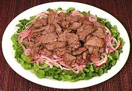

|
Beef & Watercress SaladVietnam - Thit Bo Luc Lac | ||||
| Serves: Effort: Sched: DoAhead: |
4 salad ** 1-3/4 hrs Most |
This tasty warm or room temperature salad is often mistranslated as "Shaking Beef" (it's the pan that gets shaken). It's not a daily dish in Vietnam but very popular for celebrations. | |||
|
10 ------- 5 1/2 1/2 1 1/2 1/2 ------- 6 ------- 4 1-1/2 1/4 1-1/2 ------- 2 ------- |
oz ---- cl t T T t t ---- oz ---- oz T t T ---- T ---- |
Beef (1) -- Marinade Garlic Pepper, black (2) Fish Sauce Oil Sugar Salt -------- Watercress -- Dressing Onion, red Rice Vinegar Salt Oil (3) -------- Oil -- Garnish Cherry Tomatoes. |
Prep - (1-1/3 hrs - 30 min work)
|